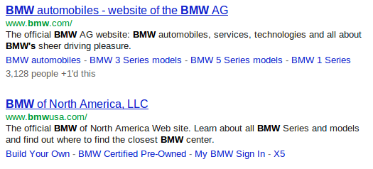

SEO
Table of Contents
1 Search Engine Optimization
2 Search Engines
- Search helps users find content
- Producers often want user to find their content
- Optimize website for discovery by search
2.1 SEO notes
- Producers want to structure their websites to allow search engines to easily understand it, think highly of it, and return it in search results
3 Optimization
- The amount of targeted traffic arriving through "organic" search results
3.1 What are we optimizing? notes
- More people on you site
- Usually targeted (the Saturn auto website may not care much about astronomers much), but first order is just attracting more traffic
- "Organic" search is that which comes without payment (eg. ads)
- Once you have more people, need to consider what they're doing next
4 Elements of a Search
- User
- Has "intent", inputs query terms
- Search Engine
- Has index, matches sites to query
- User
- Sees options, clicks one
4.1 What steps do we need understand? notes
- Intent is something like "I want to buy a camera" "How tall is Michael Jordan?" "What cars does Saturn offer?"
- Intent translated to something like "best camera" or "Jordan height" "Saturn"
- Search engines now try to figure out original intent
- Then match the intent to sites that seem like they address it
- Does a site address an intent?
- Use a similar process: analyze the text, figure out intent of site
- and usefulness
5 Matching User Intent
- Search engine must figure out intent from queries and page content
- If words in query neatly match words in content, probably relevant
- Understand the user, optimize page content
5.1 Ideal Case notes
- SEO as its best used actually addresses the concerns of a user in the language they're using
- Stays focused on what the user wants: don't dilute page contents
6 Web Crawler discovery
- To be in search index, must be crawled
- Bots are not people
- Make pages accessible to bots as well
6.1 pages for Bots notes
- Bots can't see layouts: semantic meaning
- Bots don't run javascript: keep as much static content on the page (this is changing)
- Bots look at all the data (update meta tags as appropriate)
7 Be linked
- Incoming links are a vote of confidence
- Who is linking to you? Why?
- Who are you linking to?
7.1 Power of links notes
- Are leaders in your area linking to you?
- Medical advice? Links from Mayo Clinic?
- Danger! Don't go overboard: buy links, trade links
- Are you linking to spammy sites?
8 Provide data
- Pithy, relevant content
- Useful annotations
- Make full use of HTML and new formats
8.1 Later notes
- Remember: we want to have discoverable content, have others recognize it, and show immediate value to user
- We'll cover the specifics later
9 "Black Hat"
- Doing manipulative things to increase rank
- Buying or planting links
- Spam
9.1 Huge Problem notes
- For all of these techniques, possible to go too far, or be sneaky
- Much of dealing with relevance now is counter adversarial SEO
9.2 "Stuffing"
- Adding content just for the sake of the bot
- Every variation of possible queries, no semantic meaning
- "web architecture, website, web site, web arch, ischool web…"
- How to avoid: is this useful to a user?
9.3 Details notes
- keyword stuffing in meta tags
- small pages with just these key phrases, linking to mothership
- BMW
- JCPenny got caught, too (reading)
- If it wouldn't make sense to a user, probably a bad idea
10 Summaries
- Originally, results summarized from meta tags
- Now, Keyword in Context (KWIC)
- Google providing deep links to content

10.1 History notes
- KWIC coined by Hans Peter Luhn 1960
- Which is more effective depends on context:
- web pages may be useful
- legal briefings maybe not?
11 Microformats & Microdata
- Semantic information can be used to show better summaries
- Better summaries can help users decide if a result is relevant
- Different markup methods
11.1 What works for you? notes
- We can use HTML attributes to annotate elements with more semantic information
- Some search engines, like Google, can use these annotations
- Advanced technique, mostly driven by industry
- Another reason to separate presentation
11.2 Microdata
- HTML5 Specification
itemscope,itemprop,datetime- Microdata on Yelp
11.3 itemprop notes
- aggregate rating
- Many of these techniques are changing rapidly
- Important part: Annotation to improve machine understanding, to help human understanding
12 Microdata Usage
- Wrap concept in tag with
itemscopeattribute - Type concept with
itemtypeattribute - Wrap properties of concept in tags with
itempropattribute
12.1 Types notes
- See Schema.org for item types
12.2 Microformat
- Convention of using class attribute to annotate
<div class="vcard"> <img class="photo" src="www.example.com/bobsmith.jpg" /> <strong class="fn">Bob Smith</strong> <span class="title">Senior editor</span> at <span class="org">ACME Reviews</span> <span class="adr"> <span class="street-address">200 Main St</span> <span class="locality">Desertville</span>, <span class="region">AZ</span> <span class="postal-code">12345</span> </span> </div>
12.3 Open Graph
- Allow web page to contain graph information
- Used by Facebook
metatags withog:namespace- Open Graph on Yelp
12.4 og: notes
- Similar semantic information: location, name, title
13 Preventing Crawling
- What if you don't want to be indexed?
- Decrease load on server
- Pages only useful from another context
13.1 Go Away notes
- Spent all this time talking about trying to get noticed, what if you don't want to be?
- redirect links
- message displayed after signup
- directly loading advertisements
13.2 robots.txt
- Requests to bots on crawling
Disallow: "Please do not crawl this page"- Yelp.com/robots.txt
13.3 User-Agent notes
- Specify rules for different user agents
- Only allow a few reputable crawlers:
- Google, Bing, Yahoo, Internet Archive
13.4 Purely Advisory!
- Not enforced
- Client and Server are decoupled, so server can't control the client
- Crawlers that ignore
robots.txtdetected and return HTTP error codes - Does not make pages private!
- Clever Searches
13.4.1 No Privacy notes
- Bots can ignore it
- People can look at it, wonder why you're hiding it
13.5 nofollow
robots.txtworks at the site level- At the link tag level, use attribute rel="nofollow"
- Crawlers may follow them, but won't count them as "endorsement"
- Useful for user generated content
13.5.1 Don't trust the user notes
- Some users are spammy
- You don't want to be associated with the links they post
- So tell the crawler not to follow them
- Also disincentives spam (a little bit)
14 humans.txt
- "We are people, not machines."
- Dedicated to all the people that make a site possible
- Have some fun
- Google Ventures